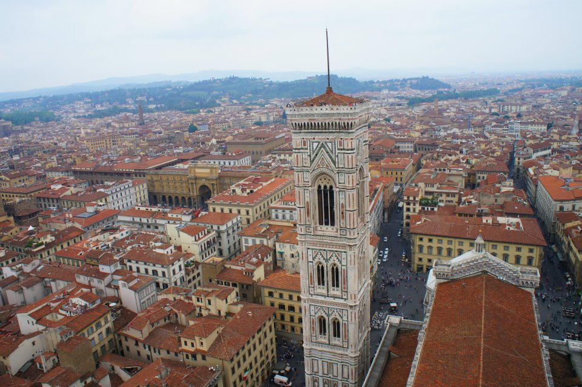
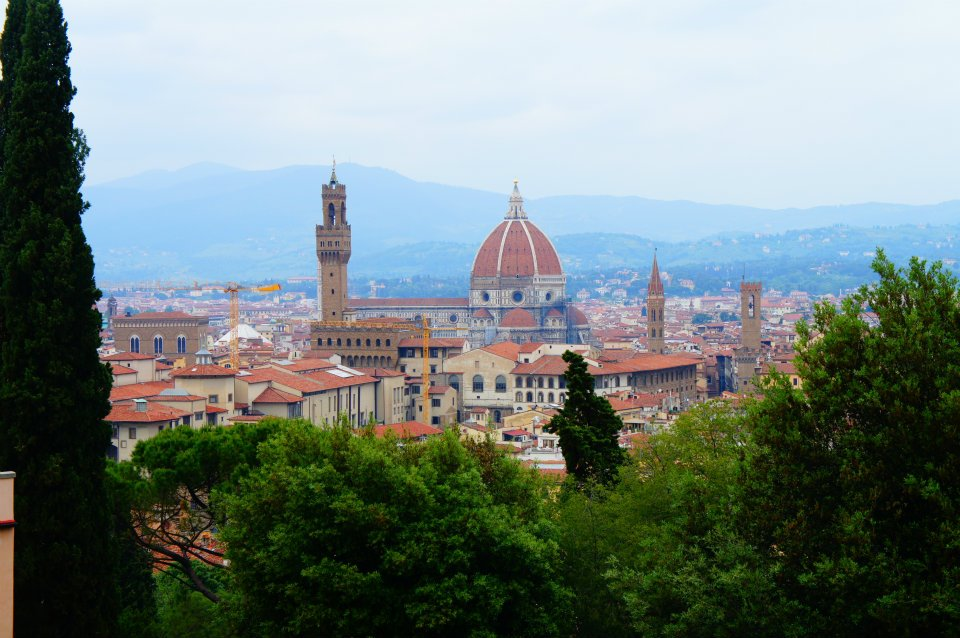
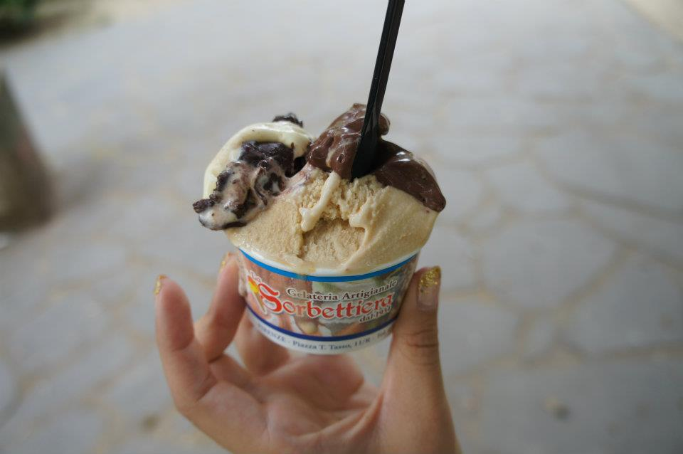
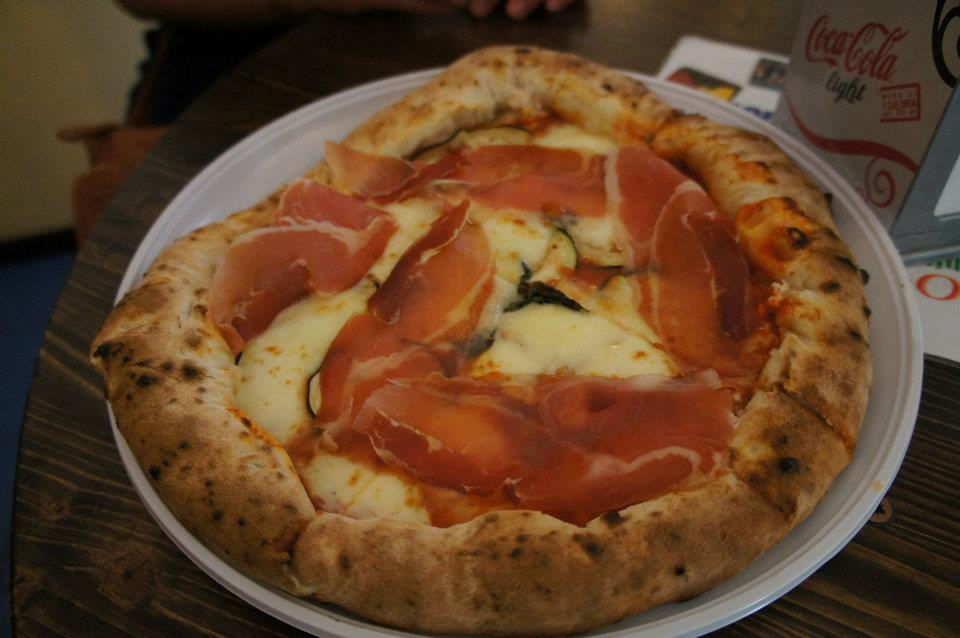

Probably one of my favorite cities we went to in Italy was Florence. Not only was it just so, so, so beautiful, but it was also one of those places that you go to and realize, hmm, I could really live here…that’s definitely the feeling I got during my stay here.
What to do
Il Duomo
Wow, was this place beautiful, and HUGE! It’s nearly impossible to capture the beauty of this thing let alone get a WHOLE picture of this thing because it’s that big!! Regardless, it's just so beautiful it’s breathtaking. I’d say the only sad part of this is that because it’s so massive, they don’t clean all of the sides of the church so you can see it’s true colors from the front. The other sides are faded from dust and debris. If you want to go inside, take note that this place is a church and you can’t go inside if you’re wearing shorts or a tank top or anything sleeveless. So, if you want to go inside, dress appropriately. Also, you can climb to the top of the Duomo which I’d say is A MUST if you’re in Florence. I mean the views from the top of the Duomo are BREATHTAKING!! Seriously, it just made me fall in love with the city. One of the things that made me so sad/angry is that so many tourists write on the duomo!! I mean, COME ON! This thing is how old and you’re just going to vandalize it like that? Such a shame, but whatevers. Just be warned, it’s A LOT of stairs and it’s VERY NARROW. So, if you’re afraid of heights….I wouldn’t suggest it, but it’s definitely something you have to do. OH another thing, if you want to go inside the church, or go to the top of the duomo, the lines are completely separate and they also get really long! But, the area around the duomo is nice for eating and shopping!! They have a Lindt Chocolate shop nearby and an amazing bakery with fantastic biscotti!!
Uffizi Gallery
Home to so many famous paintings such as Botticelli’s The Birth of Venus and Primavera (my two favorites), Da Vinci’s, The Annunciation and The Adoration of the Magi, and so much more. I never really saw myself as the type to actually appreciating art, but this place seriously made me feel so cultured and amazed by how skilled artists were back in the day. It’s also funny how artists back then weren’t able to draw babies…but that’s something you’ll learn when you go there (or in AP Euro). In any case, I really enjoyed the gallery and it’s AC. It’s structured like an old Villa and it has a beautiful view of Ponte Vecchio. Other than that, you could probably spend your whole day here if you really know your art and have an appreciation for it.
Ponte Vecchio

The actual bridge, once you walk on it, is so full of tourists and jewelry shops that it sort of takes away from the beauty of it all. However, don’t let the tourists scare you, if you walk a little down the street, you can get a beautiful view of the bridge and take a picture from there. If not, like I said earlier, you can get a great picture from the Uffizi Gallery. Before you cross the bridge, one street parallel to the bridge and near the Uffizi Gallery, there’s a bunch of shopping and restaurants and gelaterias that you must check out! There’s amazing shoes stores, which you have to check out because it’s Florence and they are known for their leather, and the restaurants (which I will mention later).
Garden of Boboli & Garden of Bardini
So, my friends and I thought that this would be a short walk through the gardens, but nope. Be prepared to walk. UPhill. Regardless, the views again are AMAZING and sooo sooo sooo sooo soooo beautiful! The Garden of Boboli has fountains, ponds, and statues and it’s just so lush and green, it’s really remarkable. Then you walk towards the Garden of Bardini, and the views just get better and better. You have a view of all of Florence and I swear from wherever you are, you can see the Duomo, no matter how small it may seem. I have numerous pictures here and even my pictures can’t do this area justice. Just beware and be mindful of where you’re going. I swear it’s like being in the secret garden….you can get very very lost.
Piazzale Michelangiolo
WOW, just WOW. If there was one place in the world that I would want to spend the last few moments of my life, it would probably here. That or if I wanted to watch the sunset. If you’re coming from the Garden of Bardini/Boboli and you want to walk here, just be prepared to walk up the stairs. If walking isn’t your thing, then take the bus, I can’t tell you which one because I honestly didn’t even know how to get the bus tickets either. Otherwise, the views here are breathtaking (once again, I know I’m getting repetitive) and you can see all of florence. There are tons of vendors up here and tons of people but regardless, it’s worth it just to see the view!
What to eat
Trattoria Mario
Maybe one of the most famous restaurants in Florence and definitely one of my favorite restaurants of the trip. Everything here is delicious, but you HAVE TO get the FLORENTINE STEAK to share or eat by yourself, I don’t judge. But the thing is HUGE! It’s super juicy, super flavorful, and all kinds of delicious. My friend also got the Bolognese, which was also really good and honestly, like I said, you can’t go wrong with anything you get here. Just come early or be prepared to wait. Oh, and if you come too late, they will run out of their specialities.
Il Fratelli
One of the oldest food places in Florence that’s known for their paninis. If you’re expecting the kind of paninis you get in America, you’ll be sadly disappointed. However, if you come here with an open mind, what you’ll get is something delicious and simple. The bread here is super crispy on the outside and soft on the inside and the meats are top quality. I have also heard the wines here are good, but I haven’t tried them, so I wouldn’t know.
Perche No
One street parallel to Il Fratelli you’ll find what multiple newspaper articles call one of the best gelatos in the world. When I came here with my friends, there was a film crew making a documentary on the gelateria. The gelatos are super fresh and delicious and they even give you the toppings they put on top of the gelatos. I even wrote a yelp review so I’ll leave it here: Perche No.
Sorbettiera
Another gelato place that visitors MUST TRY. It’s away from the touristy area and right next to a park, so if you’re planning on coming here, be prepared with a map in hand so you can navigate your way through the city. My favorites were the cookies, salted caramel, and the dark chocolate. I also wrote a yelp review so here’s the link.
O'Vesuvio Pizzeria
So, you know that one pizza shop that the Jersey Shore crew worked at when they were in Florence? Well, this is the place! AND, you’d be pleasantly surprised to know that this place is actually pretty good! My friends and I came here thinking OH, we’ll just come here and take pictures, and maybe if it looks good, we’ll go in. Surprisingly enough, it did look good, and better yet, it tasted even better! There are tons of toppings, the place has so much character, and you, honestly, won’t be disappointed. My friends and I got whatever they recommended for us, with the crust stuffed with ricotta cheese which was DELICIOUS! I also wrote a yelp review for this place and you can find it link.
Honestly, there is so much to do, see, and eat in Florence that if I went again, I’d just take the time to get lost in the city and explore to my heart’s desire. I really loved it here and am trying to find different reasons to go back.